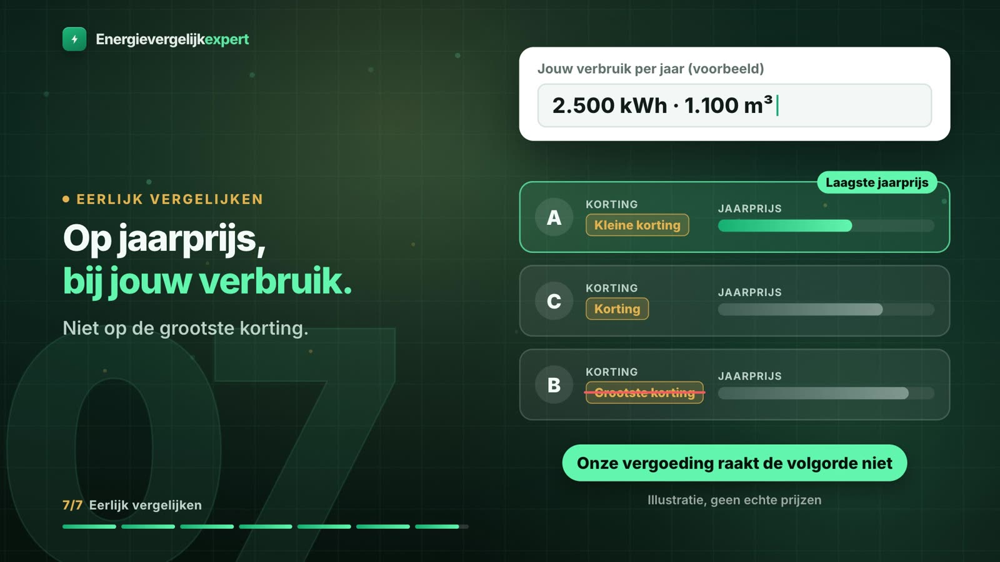

Wat een welkomstkorting is
Een welkomstkorting is een korting of premie die een leverancier geeft als je een nieuw contract afsluit. Volgens Energievergelijkexpert geldt die eenmalig, meestal in het eerste jaar. Leveranciers houden hun scherpste aanbod vaak voor nieuwe klanten; wie blijft zitten, betaalt na het eerste jaar het tarief zonder korting.
De ACM wijst op drie dingen die in de kleine letters kunnen staan:
- Een korting geldt vaak alleen over de leveringskosten, niet over de transportkosten of de belastingen.
- Sommige kortingen zijn niet in euro's, maar in centen per kWh of m³.
- De voorwaarden zeggen wanneer je de korting krijgt. Lees dat na, want het moment bepaalt ook of je hem ooit terug moet betalen.
Twee getallen per contract
Om eerlijk te vergelijken heb je per contract twee jaarbedragen nodig, allebei bij je eigen verbruik:
- Jaar 1: de jaarprijs inclusief alle kosten, min de korting. Dat is wat je komend jaar echt betaalt.
- Jaar 2: dezelfde jaarprijs zonder korting. Dat is wat het contract kost zodra de korting op is.
Een kort rekenvoorbeeld met verzonnen, ronde getallen maakt het verschil zichtbaar. Het gaat om de rekensom, niet om echte prijzen.
| Voorbeeld, verzonnen bedragen | Contract A | Contract B |
|---|---|---|
| Jaarprijs zonder korting | 2.000 | 1.850 |
| Welkomstkorting | 300 | 0 |
| Jaar 1 | 1.700 | 1.850 |
| Jaar 2 | 2.000 | 1.850 |
In jaar 1 is A het goedkoopst. Vanaf jaar 2 is B het goedkoopst. Over twee jaar samen zijn ze in dit voorbeeld precies gelijk. Welk contract voor jou beter uitpakt, hangt dus af van hoe lang je blijft en wat je na het eerste jaar doet.

Wat er na het eerste jaar gebeurt
Dat hangt af van de looptijd. Bij een contract van meer jaren vast betaal je in jaar 2 en 3 het vaste leveringstarief zonder korting. Netbeheerkosten en belastingen kunnen wel veranderen, dus de tweede regel is een goede benadering, geen vast bedrag. Bij een contract van één jaar vast loopt het contract na een jaar af. Doe je niets, dan verandert je vaste tarief volgens de ACM in een variabel tarief, en je leverancier moet je die nieuwe tarieven minstens 30 dagen van tevoren laten weten. Dat bericht is het moment om opnieuw te vergelijken: vanaf de einddatum betaal je geen opzegvergoeding meer, alleen de opzegtermijn van maximaal een maand geldt.
Energievergelijkexpert raadt aan om bij het afsluiten een herinnering te zetten voor het einde van je contract. Op dat moment kies je zonder opzegvergoeding uit wat er dan te krijgen is.
Let op het termijnbedrag
Je maandbedrag zegt weinig over de korting. Het termijnbedrag is een voorschot: een schatting van je jaarkosten gedeeld door twaalf, die pas op de jaarafrekening wordt verrekend. De ACM noemt het zelfs een voorbeeld van misleiding als een verkoper een laag termijnbedrag voorstelt dat na de overstap veel hoger wordt. Vergelijk daarom op jaarbedragen, nooit op het maandbedrag.
Moet je de korting ooit terugbetalen?
Bij een welkomstpremie in geld kan dat. Volgens de ACM mag je leverancier de premie terugvragen als je binnen zes maanden na de ingangsdatum opzegt, maar nooit meer dan het bedrag van de premie. Na zes maanden hoef je niets terug te betalen, en ook niet als je de premie pas kreeg na je tweede termijnbedrag. Een welkomstcadeau dat geen geld is, hoef je nooit terug te geven.
Daar kan bij een vast contract nog een opzegvergoeding bij komen als je te vroeg weggaat. Hoe die wordt berekend en hoe je hem voor je overstap opvraagt, staat in deze uitleg over opzegtermijn, opzegvergoeding en bedenktijd.
Hoe Energievergelijkexpert met korting omgaat
Energievergelijkexpert sorteert op de laagste jaarprijs bij het verbruik dat je invult, inclusief energiebelasting, btw, vaste kosten, netbeheerkosten, korting en de vermindering energiebelasting. Daarnaast laat de site zien wat een contract zonder die korting zou kosten, zodat je jaar 2 ziet. Waarom er daardoor geen vaste goedkoopste leverancier voor iedereen bestaat, lees je in de uitleg over de goedkoopste energieleverancier. De ranglijst van vandaag wordt elke nacht opnieuw berekend bij een voorbeeldverbruik van 2.500 kWh en 1.100 m³.
Energievergelijkexpert verdient aan een overstap: de leverancier betaalt een vergoeding, en die verschilt per leverancier. Volgens de site stuurt die vergoeding de volgorde niet, bestaat betaalde plaatsing er niet, en is het overzicht een selectie van de markt en niet de hele markt. Dat staat uitgelegd op de pagina over hoe Energievergelijkexpert verdient.
Checklist voor een contract met korting
- Is de korting in euro's of in centen per eenheid, en waar gaat hij over?
- Wanneer krijg je de korting, en wat zijn de voorwaarden?
- Wat kost het contract per jaar zonder korting?
- Hoe lang is de looptijd, en wat gebeurt er daarna?
- Zou je binnen zes maanden weg willen? Reken dan met terugbetalen.
Wil je dat de netbeheerkosten en belasting meteen goed in de vergelijking zitten, lees dan ook welk deel van je rekening bij elke leverancier gelijk is. Contracten naast elkaar leggen met je eigen verbruik kan op energievergelijkexpert.nl.
Bronnen
- ACM ConsuWijzer, Tips bij een energieleverancier kiezen (korting over leveringskosten, centen, voorwaarden), geraadpleegd 23-10-2026
- ACM ConsuWijzer, Energiecontract opzeggen (welkomstpremie terugbetalen binnen 6 maanden, welkomstcadeau)
- ACM ConsuWijzer, Vaste en variabele leveringskosten (na afloop vast wordt variabel, 30 dagen vooraf)
- ACM ConsuWijzer, Het termijnbedrag en Energiecontract vernietigen of annuleren (laag termijnbedrag als misleiding)
- Energievergelijkexpert, energievergelijkexpert.nl/goedkoopste-energieleverancier/ (sortering inclusief korting, elke nacht, 2.500 kWh en 1.100 m³), /energie-uitgelegd/goedkoopste-energieleverancier/ (jaar twee, herinnering), /energie-uitgelegd/vast-of-dynamisch/ (prijs zonder korting getoond), /energie-uitgelegd/overstappen/ (scherpste tarief voor nieuwe klanten), /hoe-wij-verdienen/